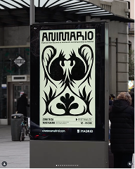
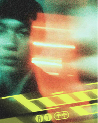
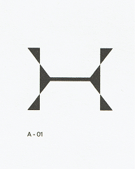
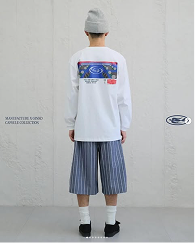
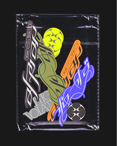
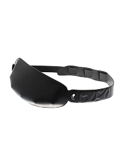
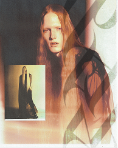
 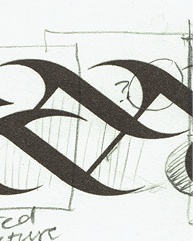
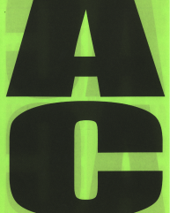
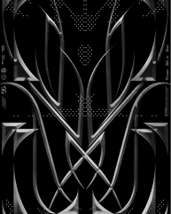
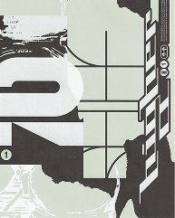
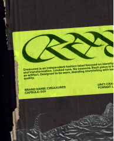
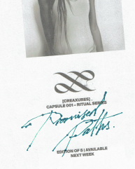
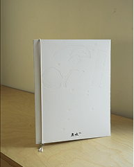
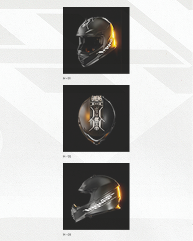
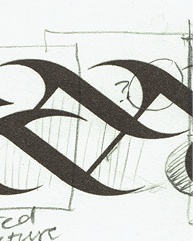
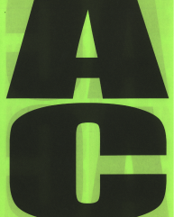
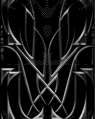
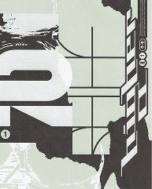
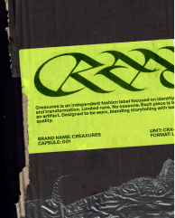
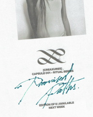
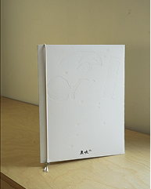
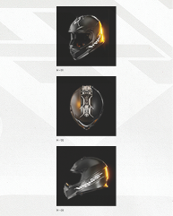
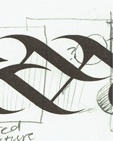
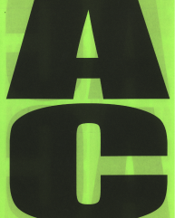
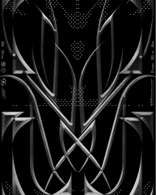
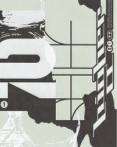
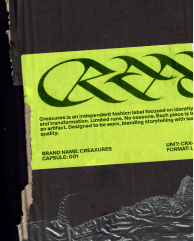
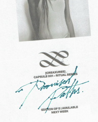
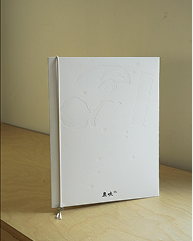
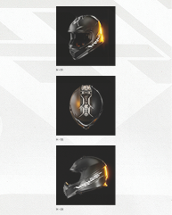
YAM works across the disciplines of design,
art direction and typography for clients in
culture and commerce.
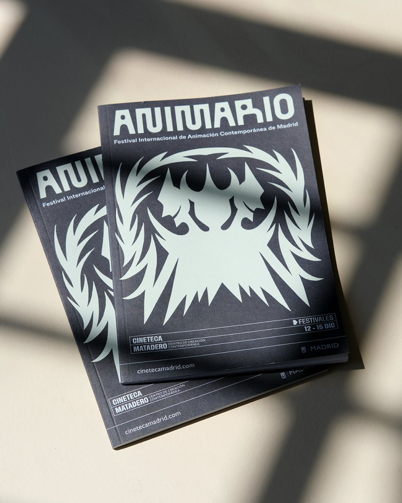
Animario is Madrid’s international contemporary animation film festival, with Poland as the guest country for its 2024 edition.
This year’s identity draws on wycinanki—the 19th-century Polish art of paper cutting used to depict daily life and decorate homes.
Credits:
Alfonso Yordi
Victor Clemente
Jaime del Corro
Matteo Guarnaccia
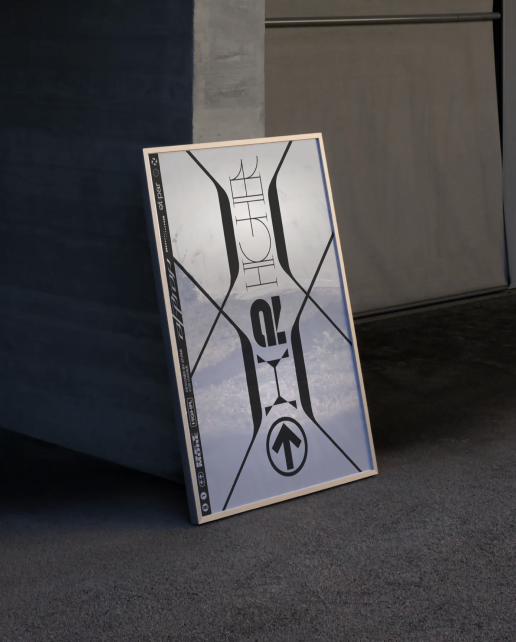
Branding and visual identity for a modern tech startup focused on innovation.
Animario is Madrid’s international contemporary animation film festival.
Credits:
Alfonso Yordi
Victor Clemente
Jaime del Corro
Matteo Guarnaccia